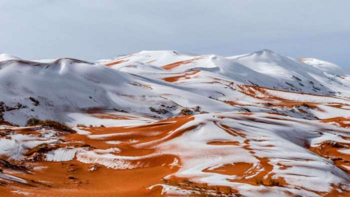

Bienvenue en Algérie
L'Algérie, en forme longue et officielle la République algérienne démocratique populaire, est un pays d'Afrique du Nord situé en bordure de la mer Méditerranée, dont la capital est Alger. C'est le pays le plus étendu d'Afrique, du monde arabe et du bassin méditerranéen...
L'Algérie se situe dans le Maghreb, en Afrique du Nord. Elle est bordée au nord par la mer Méditerranée et 80 % de son territoire est constitué par le désert du Sahara au sud. Les 20 % restants sont principalement formés par la chaîne montagneuse de l'Atlas, couverte d'une végétation naturelle et de cultures méditerranéennes qui poussent grâce au climat en vigueur.

Les autochtones de l'Algérie sont les Berbères. En effet, ils sont présents depuis la Préhistoire sur une grande partie du nord de l'Afrique ainsi que sur les îles Canaries. Les Berbères sont composés de plusieurs tribus : les Kabyles, les Chaouis, les Touaregs et les Mozabites.